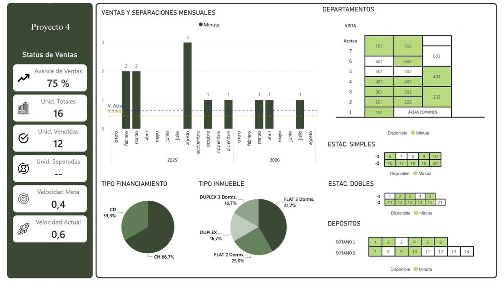
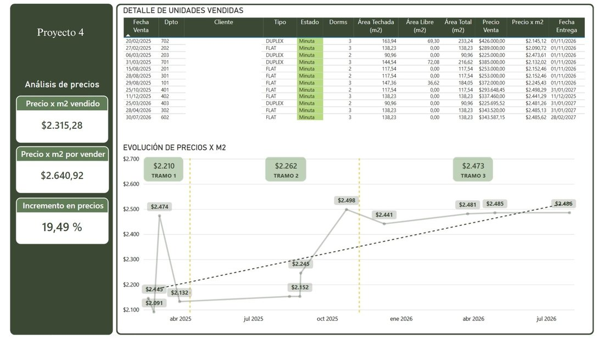
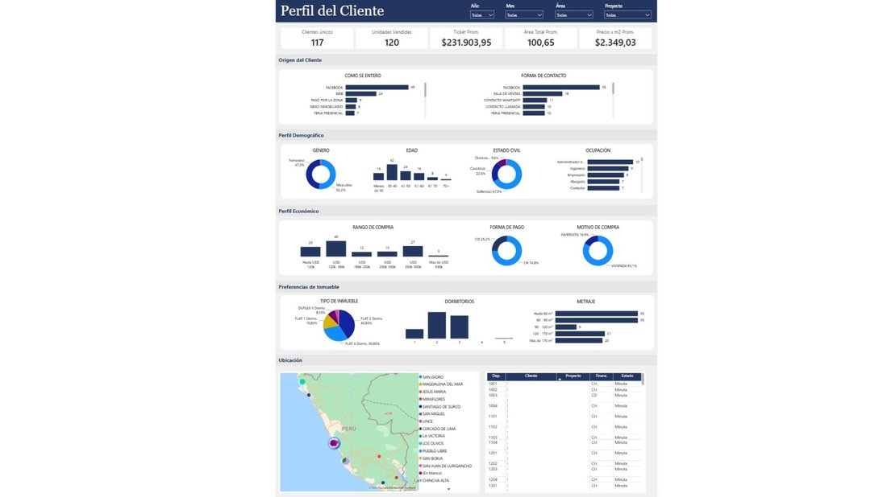

Dashboard Experience
From a portfolio view down to a single unit.
The dashboard works at four levels: a portfolio overview comparing every project's sales pace and collections, a drill-down into one project's monthly sales and unit availability, a unit-by-unit price and sales-evolution view, and a customer profile view that Marketing uses to segment ad targeting.

Portfolio overview — sales pace vs. target, unit status and collections across every active project.

Project drill-down — monthly sales and separations, unit availability by floor, and financing mix.

Unit-level detail and price-per-m² evolution, tracked in pricing tramos over time.

Customer profile — demographics, how buyers find us, and their property preferences, used by Marketing to target ad spend.